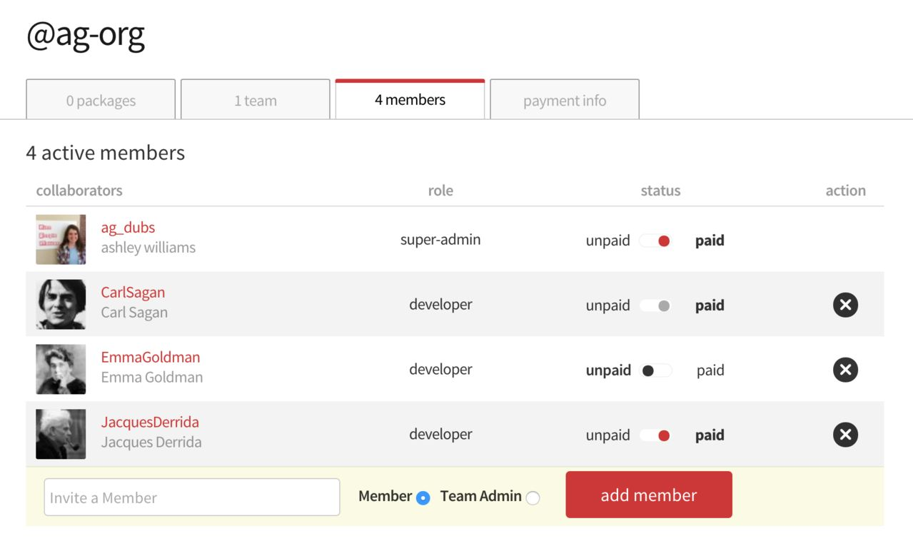

Let's say we have an Organization, @ag_org. This Organization
was created by user @ag_dubs, and therefore she is the Super Admin.
Being a Super Admin, she adds 3 members to her team:
There are three types of Sponsorship that can occur:
When Super Admin, @ag_dubs, added JacquesDerrida to the Organization,
JacquesDerrida did not already belong to an organization nor did they have a
subscription to private packages.
By default, when the Super Admin added him to the Organization, JacquesDerrida
was set as a member of the Organization, paid by the current organization.
This appears in the UI like this:

JacquesDerrida is a developer in the org, they can:
JacquesDerrida is sponsored, they can:
JacquesDerrida cannot:
When Super Admin, @ag_dubs, added CarlSagan to the Organization, CarlSagan
already belonged to another Organization (@nasa-org, duh).
By default, when CarlSagan was added to the Organization, he was set as a member
of the Organization, paid by another scope. This appears in the UI like this:
As a result, CarlSagan has the same permissions as JacquesDerrida, above.
As a subscriber to Private Packages, you can understand your sponsorship as "sponsoring
yourself". As a result, a subscriber to private packages would have had the same
default behavior as occured for CarlSagan, i.e., the previous sponsorship would
trump the possibility of a new Organization sponsorship. A subscriber to private
packages will appear in the Organization dashboard as someone who is paid but
not by the current org. This appears in the UI the same as above:
If a user is a subscriber to private packages, this sponsorship scope will trump all other potential sponsorships. If you would like to change this, i.e., offer sponsorship to a user who already has another sponsorship (org or private pkgs), please contact support@npmjs.com.
EmmaGoldman, at the time that @ag_dubs added them to the @ag_org Organization,
did not subscribe to private packages nor did they belong to another Organization.
This means that they did not have any previous sponsorships.
Like JacquesDerrida, EmmaGoldman was set as paid by the current organization,
@ag-org by default. However, Super Admin @ag_dubs opted to cancel @ag-org's
sponsorship of EmmaGoldman. This status appears in the UI like this:
EmmaGoldman is a developer in the org, they can:
EmmaGoldman is not sponsored, they cannot:
EmmaGoldman can:
EmmaGoldman cannot:
Last modified December 29, 2015 Found a typo? Send a pull request!